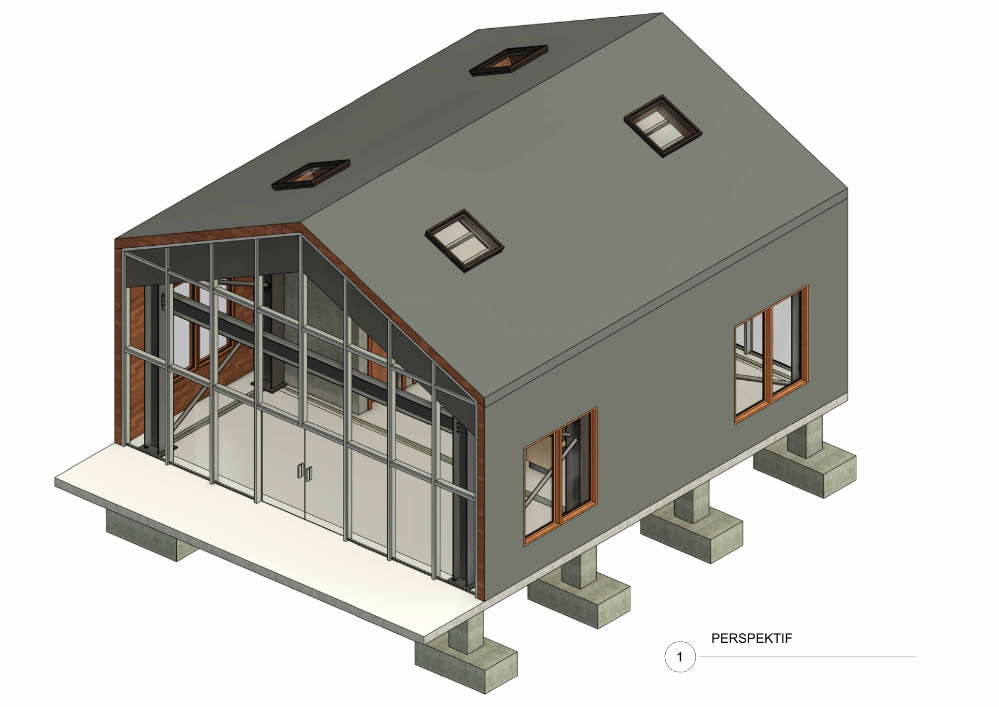

Respon tapak pesisir pulau
Massa bangunan diangkat di atas sistem panggung footplat beton bertulang (-1.65m ke +0.00m). Menghindari perataan kontur alami pulau, ramah terhadap pasang surut air laut, dan meminimalkan ekskavasi tanah pesisir.
Fasilitas kawasan Sport Resort di Pulau Lemukutan, Kalimantan Barat. Mencakup master set terpadu 3 tipologi bangunan: Paviliun Sewa Olahraga Bahari (Struktur Baja), Cottage Pesisir 1 Lantai, dan Cottage 2 Lantai. Seluruh etiket diselaraskan resmi atas nama Heru Ardiansyah.
Telusuri integrasi antara konsep spasial, struktur panggung, dan detail keteknikan pembesian.

Lembar A5 · Perspektif 3DSetiap garis rancangan berangkat dari keterbatasan tapak pulau dan efisiensi material pesisir.
Massa bangunan diangkat di atas sistem panggung footplat beton bertulang (-1.65m ke +0.00m). Menghindari perataan kontur alami pulau, ramah terhadap pasang surut air laut, dan meminimalkan ekskavasi tanah pesisir.
Logistik material ke pulau diselesaikan dengan portal modular baja H-Beam 305×305×97 dan balok Universal Beam 305×165×40 dengan ikatan angin kabel baja (tie rods) untuk perakitan cepat dan tahan terpaan angin laut kencang.
Fasad depan curtain wall kaca transparan membingkai etalase peralatan diving, snorkeling, dan kayak. Atap pelana bitumen dilengkapi 4 unit skylight dan bukaan ventilasi silang untuk kenyamanan termal dan penerangan alami.
Dokumentasi teknis menyeluruh terinci mulai dari skala tapak 1:100 hingga pembesian 1:10:
| Kode | Nama Gambar Kerja | Skala | Cakupan & Detail |
|---|---|---|---|
| A1 | Denah Lantai 1 | 1 : 100 | Area sewa terbuka, counter penerimaan, sirkulasi ganda, dan toilet ganda |
| A2 | Tampak 4 Sisi (Depan, Belakang, Kanan, Kiri) | 1 : 100 | Proporsi fasad kaca, jendela samping berbingkai kayu, elevasi bubungan |
| A3 | Potongan A-A & Potongan B-B | 1 : 100 | Pondasi footplat -1.65m, lantai +0.00m, plafon +2.94m, puncak atap +5.60m |
| A4 | Denah Rencana Atap | 1 : 100 | Pola atap pelana bitumen dan peletakan 4 unit skylight kaca |
| A5 | Perspektif Massa 3D | Axon | Koneksi atap, fasad curtain wall kaca, dan tiang panggung pesisir |
| S1 — S6 | Rencana Pondasi, Sloof, Kolom Baja, Kabel & Atap | 1 : 100 | Modul bentang 8.4m × 6.6m, sambungan portal, reng baja L 5×10, Universal Beam |
| S7 | Isometri Struktur 3D Rangka Baja | 3D Axon | Geometri ruang portal baja H-Beam 305×305 dan ikatan angin kabel pengaku |
| D1 | Detail Pondasi, Sloof, Kolom, Balok | 1:10 — 1:25 | Pembesian footplat 150×150cm (D13), sloof 15×30, baseplate kolom baja H |